Lecture 10: Inference
TL;DR
- Inference is a critical part of language model deployment, distinct from training due to its memory-limited and dynamic nature.
- Key metrics for inference efficiency are Time-to-First-Token (TTFT), latency (tokens/second), and throughput (tokens/second).
- The KV cache is a major bottleneck in transformer inference, leading to memory-bound operations, especially during token generation.
- Architectural innovations (GQA, MLA, local attention, state-space models, diffusion models) and optimization techniques (quantization, pruning, speculative decoding, continuous batching, PagedAttention) are crucial for improving inference efficiency.
- The future of efficient inference lies in radical architectural changes and leveraging systems-level optimizations.
Key Concepts
- Inference Workload: Generating responses from a fixed, trained model.
- Memory-Limited vs. Compute-Limited: A workload is memory-limited if its performance is bottlenecked by memory bandwidth, and compute-limited if it's bottlenecked by FLOPs.
- Arithmetic Intensity: The ratio of FLOPs to bytes transferred, indicating how much computation is done per byte of data moved.
- KV Cache: Stores key and value vectors from previous tokens to avoid recomputing them during autoregressive generation.
- Prefill vs. Generation: Prefill is the initial processing of the prompt (compute-limited), while generation is the sequential output of new tokens (memory-limited).
- Grouped-Query Attention (GQA): Reduces KV cache size by sharing key/value heads across multiple query heads.
- Multi-Head Latent Attention (MLA): Reduces KV cache size by projecting key/value vectors into a lower-dimensional latent space.
- Local Attention: Restricts attention to a fixed-size window of past tokens, making KV cache size independent of sequence length.
- State-Space Models (SSMs): Alternative architectures to transformers, drawing from signal processing, aiming for sub-quadratic time complexity for long contexts.
- Diffusion Models for Text Generation: Generate all tokens in parallel and iteratively refine them, offering potential for significant speedups over autoregressive models.
- Quantization: Reduces the precision of numbers (e.g., from FP16 to INT8) to decrease memory footprint and FLOPs, but can impact accuracy.
- Model Pruning: Removes unimportant parts of a model to make it smaller and faster, often followed by distillation to recover accuracy.
- Speculative Decoding: Uses a smaller, faster draft model to generate multiple tokens in parallel, which are then verified by the larger target model.
- Continuous Batching / PagedAttention: Systems-level optimizations to handle dynamic inference workloads by efficiently managing GPU memory and scheduling requests.
Detailed Notes
[00:05] Introduction to Inference
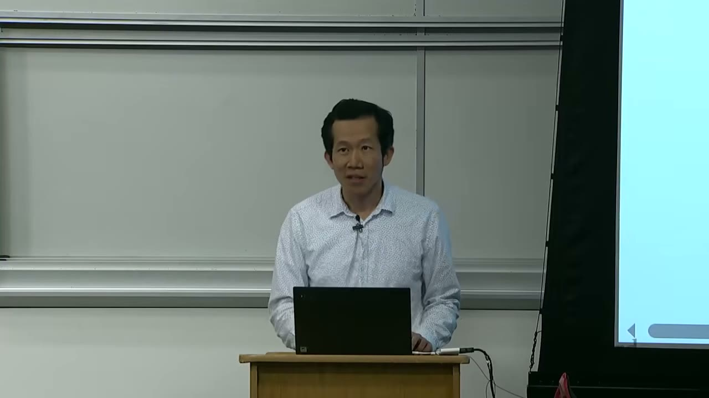
This lecture, Lecture 10, will take a break from scaling laws to discuss inference.
Inference: Given a fixed, trained model, generate responses given prompts.
We will cover: 1. Understanding the inference workload. 2. Ways to make inference faster.
Inference is a deep topic, and this lecture will condense many concepts.
[00:54] Where Inference Shows Up
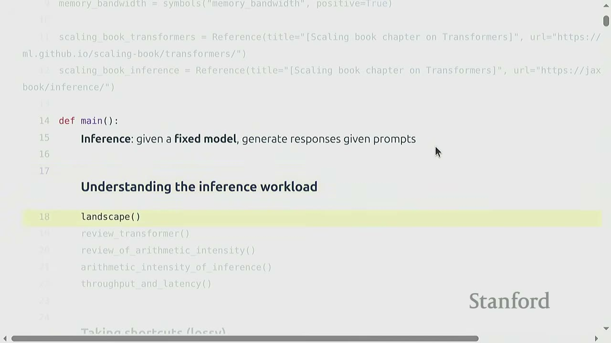
Inference is crucial in many applications: - Actual Use: Chatbots, code completion (e.g., Cursor), batch data processing using language models. These demand inference to generate tokens. - Model Evaluation: Assessing model performance (e.g., on instruction following datasets) requires running inference. - Test-Time Compute: Techniques like "thinking more" before outputting a final answer often involve multiple inference steps (e.g., chain-of-thought prompting). - Training via Reinforcement Learning (RL): In RL, models sample responses and evaluate them based on a reward signal, which requires inference.
Inference underpins many fundamental functions of language models, highlighting its importance.
[02:16] Why Efficiency Matters for Inference
- Training is a one-time cost.
- Inference is repeated many times.
Illustrative Stats: - Sam Altman (OpenAI): "openai now generates about 100 billion words per day. all people on earth generate about 100 trillion words per day." (Feb 9, 2024) - Aman Sanger (Cursor): "Cursor writes almost 1 billion lines of accepted code a day. To put it in perspective, the entire world produces just a few billion lines a day." (Apr 28, 2023)
These figures demonstrate the massive scale of inference, making its efficiency a critical concern.
[03:06] Metrics for Inference
Three key metrics are used to measure inference performance: 1. Time-to-First-Token (TTFT): How long a user waits before any generation happens. Crucial for interactive applications where immediate feedback is desired. 2. Latency (tokens/second): How fast tokens appear after the first token. Also important for interactive applications to maintain a smooth conversation flow. 3. Throughput (tokens/second): The total number of tokens generated per second across all users or requests. This is vital for batch processing and overall system capacity.
Note: High throughput doesn't necessarily imply low latency, as some requests might take a long time to complete while others are processed quickly.
[04:08] Key Considerations in Efficiency
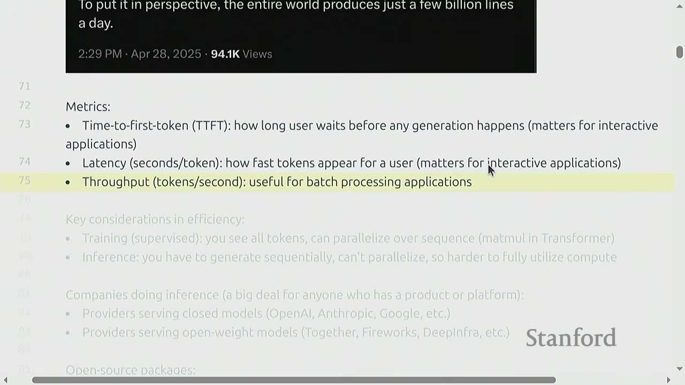
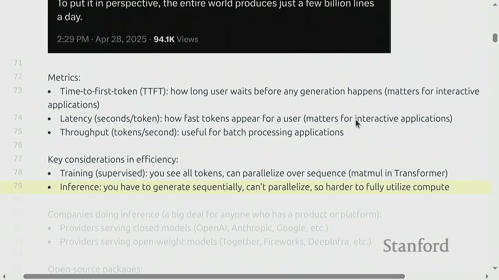
Training (Supervised): - You see all tokens in the sequence simultaneously. - This allows for parallelization over the sequence (e.g., matrix multiplications in Transformers). - This is highly efficient for utilizing hardware.
Inference: - You have to generate tokens sequentially (autoregressively). - This means you cannot parallelize the generation process. - Consequently, it's harder to fully utilize compute and often becomes memory-limited.
This sequential nature is the core challenge that makes inference harder and often memory-bound.
Who Cares About Inference Efficiency? - Companies serving closed models (OpenAI, Anthropic, Google, etc.) - Providers serving open-weight models (Together, Fireworks, DeepInfra, etc.) - Various open-source packages (vLLM, Tensor-RT, TGI) are dedicated to optimizing inference.
Academics often focus on training and model performance, but industry practitioners prioritize inference efficiency due to its direct impact on user experience and operational costs.
[05:53] Understanding the Inference Workload
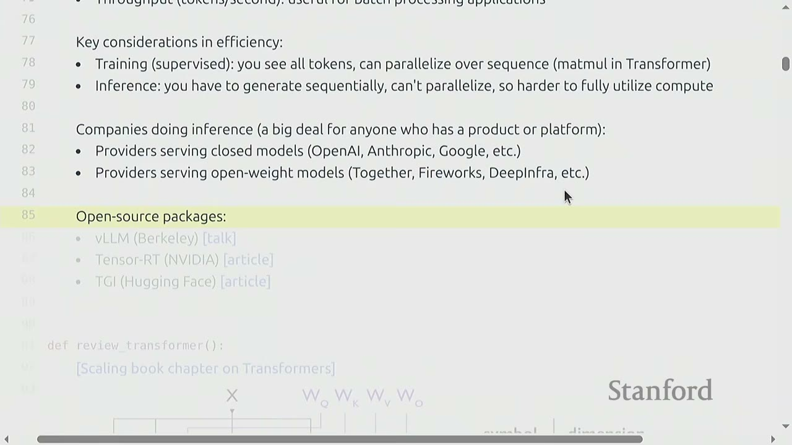
To understand inference, we'll review the Transformer architecture and arithmetic intensity.
[06:11] Review of the Transformer
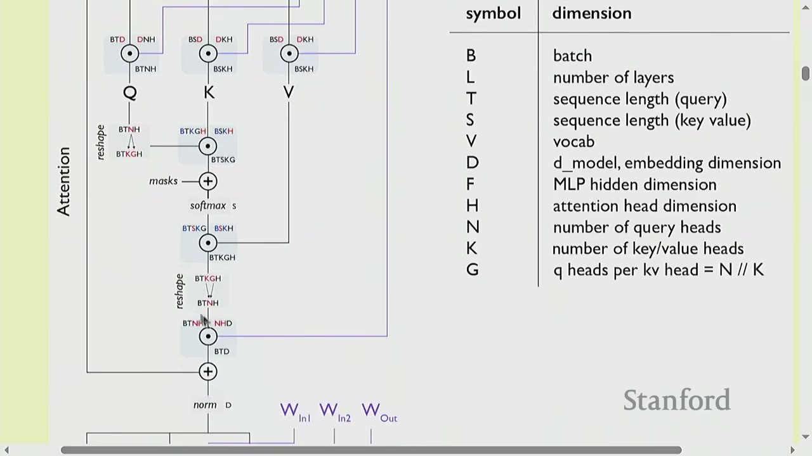
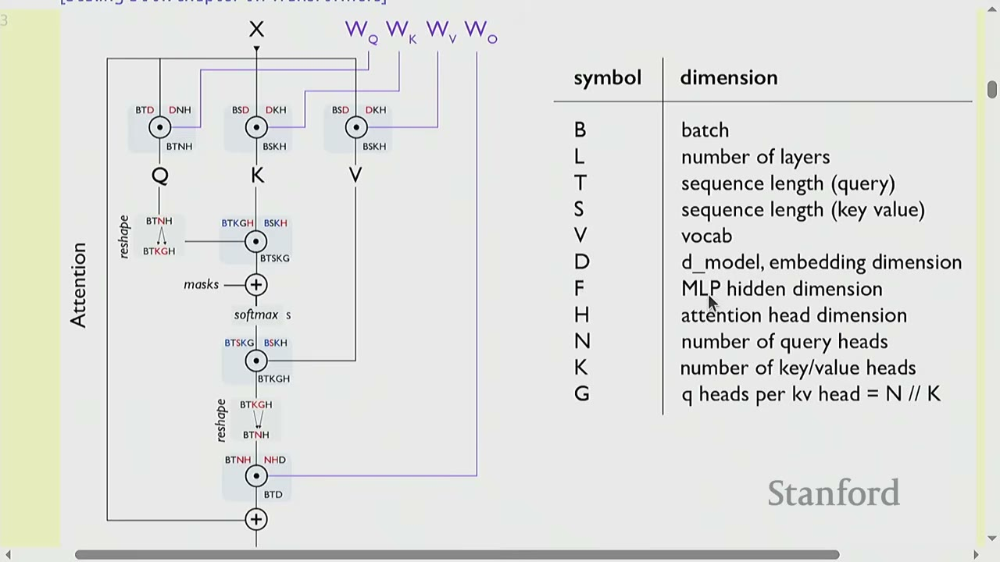
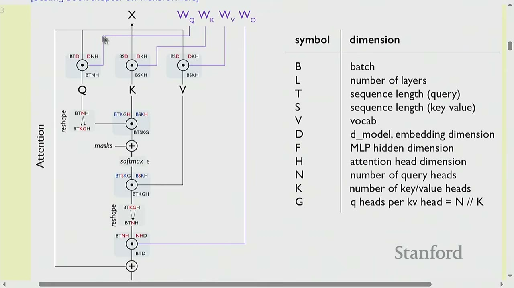
The diagram from the "Scaling book chapter on Transformers" (a recommended resource) illustrates the computation graph of a Transformer.
Notation:
- B: Batch size (number of sequences)
- L: Number of layers
- T: Sequence length (query)
- S: Sequence length (key/value)
- V: Vocabulary size
- D: Model embedding dimension
- F: MLP hidden dimension (typically $4 \times D$)
- H: Attention head dimension
- N: Number of query heads ($N \times H = D$)
- G: Number of key/value heads (for GQA, $K \times G = N$)
The diagram shows how input X passes through attention and MLP layers, involving matrix multiplications with query (Q), key (K), and value (V) matrices.
FLOPs for a feedforward pass: $6 \times (B \times T) \times (\text{num_params} + O(T))$
[08:10] Review of Arithmetic Intensity
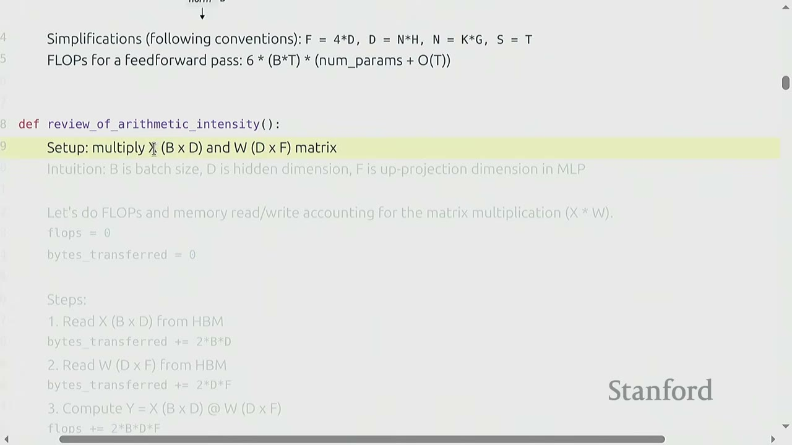
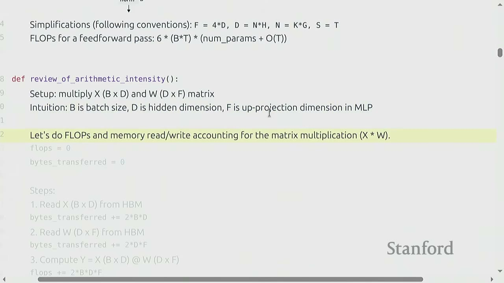
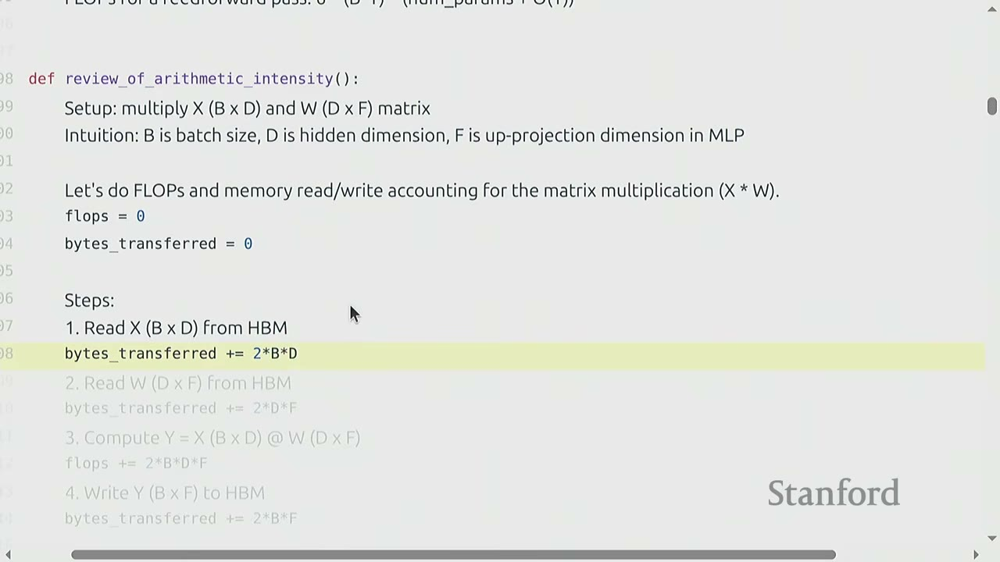
Arithmetic intensity helps characterize whether a workload is compute-limited or memory-limited.
Setup: Multiply matrix $X$ (B x D) by matrix $W$ (D x F).
- B: Batch size
- D: Hidden dimension
- F: Up-projection dimension in MLP
Steps to calculate FLOPs and bytes transferred (assuming BF16, so 2 bytes/value):
1. Read X (B x D) from HBM: bytes_transferred += 2 * B * D
2. Read W (D x F) from HBM: bytes_transferred += 2 * D * F
3. Compute Y = X @ W (B x F): flops += 2 * B * D * F
4. Write Y (B x F) to HBM: bytes_transferred += 2 * B * F
Total FLOPs: 2 * B * D * F
Total Bytes Transferred: 2 * B * D + 2 * D * F + 2 * B * F
Arithmetic Intensity: flops / bytes_transferred (want to be high).
Simplification: Assuming B is much smaller than D and F (e.g., B=100, D=F=1000s), the arithmetic intensity simplifies to B.
Accelerator Intensity (H100):
- flops_per_second (FP16): $989 \times 10^{12}$
- memory_bandwidth: $3.35 \times 10^{12}$
- accelerator_intensity = flops_per_second / memory_bandwidth $\approx 295$
Conclusion:
- If computation_intensity > accelerator_intensity, it's compute-limited (good).
- If computation_intensity < accelerator_intensity, it's memory-limited (bad).
For matrix multiplication, it's compute-limited if B > 295 on an H100.
Extreme Case (B=1): Matrix-vector product. - Arithmetic intensity: 1 - This is memory-limited (bad) because you read a D x F matrix to perform only 2DF FLOPs. - This is essentially what happens with generation (token by token processing).
[01:42:19] Arithmetic Intensity of Inference
Naive Sampling:
- To generate each token, feed the entire history (prompt + generated tokens) into the Transformer.
- Complexity: Generating T tokens requires $O(T^3)$ FLOPs (since each feedforward pass is $O(T^2)$).
- Observation: A lot of the work (encoding prefixes) is redundant.
Solution: Store KV cache in HBM.
Sampling with KV Cache: 1. Prefill: Given a prompt, encode it into vectors. This stage is parallelizable, like training. - Compute-bound (good). 2. Generation: Generate new response tokens sequentially. - Memory-bound (problematic).
Let's compute FLOPs and memory IO for MLP and attention layers separately.
- S: Number of tokens we're conditioning on (prompt length).
- T: Number of tokens we're generating.
- For prefill: T = S.
- For generation: T = 1.
[01:42:19] MLP Layers (focusing on matrix multiplications)
FLOPs: 6 * B * T * D
Bytes Transferred: 4 * B * T * D + 6 * D * F
Arithmetic Intensity (simplified): B * T
For the two stages:
- Prefill (T=S): Intensity is B * S. This is easy to make compute-limited (good) by making B * S large enough (e.g., a long prompt or large batch size).
- Generation (T=1): Intensity is B. This means B (number of concurrent requests) must be large enough to make it compute-limited.
Why is this important?
- In MLP layers, every sequence hits the same MLP weights (Wup, Wgate, Wdown). So batching helps!
[02:11:00] Attention Layers (focusing on matrix multiplications with FlashAttention)
FLOPs: 4 * B * S * T * D
Bytes Transferred: 4 * B * S * D + 4 * B * T * D
Arithmetic Intensity (simplified): S * T / (S + T)
For the two stages:
- Prefill (T=S): Intensity is S/2. This is good, as long as S (prompt length) is large enough.
- Generation (T=1): Intensity is S / (S + 1). This is approximately 1, which is bad!
Why is this bad?
- Unlike MLPs, batching doesn't help for attention layers during generation.
- In MLP layers, every sequence hits the same MLP weights.
- In attention layers, every sequence has its own KV cache (Q, K, V), and these depend on B.
- Mathematically, the B term cancels out in the arithmetic intensity for attention layers.
Summary:
- Prefill is compute-limited, generation is memory-limited.
- MLP intensity is B (requires concurrent requests).
- Attention intensity is S * T / (S + T). During generation (T=1), this becomes S / (S+1) (approximately 1), which is impossible to improve by batching.
[02:40:00] Throughput and Latency
Since inference is memory-limited, we can compute the theoretical maximum latency and throughput of a single request. We assume perfect overlap between compute and communication, ignoring overheads.
Memory Usage:
- KV_cache_size = S * (K * L * H * 2 * 2) (for sequence length S, K heads, L layers, H dim, 2 for key/value, 2 for BF16)
- total_memory_usage = B * KV_cache_size + parameter_size
Latency: memory / memory_bandwidth (time to read all parameters and KV cache for each step)
Throughput: B / latency (generating B tokens in parallel)
Llama 2 13B Config on H100:
- S: 1024, D: 5120, F: 13824, N: 40, K: 40, H: 128, L: 40, V: 32000, memory_bandwidth: $3.35 \times 10^{12}$
Results for different batch sizes (B):
- B=1:
- memory: 26.8 GB
- latency: 8.08 ms
- throughput: 124.6 tokens/sec
- B=64:
- memory: 79.7 GB
- latency: 23.79 ms (worse)
- throughput: 2689.4 tokens/sec (better)
- B=256:
- memory: 240.7 GB (doesn't fit in H100's 80GB memory)
- latency: 70.07 ms (much worse)
- throughput: 3561.7 tokens/sec (better, but diminishing returns)
Trade-off between latency and throughput: 1. Smaller batch sizes yield better latency but worse throughput. 2. Larger batch sizes yield better throughput but worse latency.
Easy Parallelism: Launch M copies of the model. Latency is the same, throughput increases by M.
Harder Parallelism: Shard the model and the KV cache (more details in the "Scaling book chapter on Transformers").
Time-to-First-Token (TTFT): - Essentially a function of prefill. - Use smaller batch sizes during prefill for faster TTFT. - Use larger batch sizes during generation to improve throughput.
[03:28:00] Taking Shortcuts (Lossy)
The KV cache size is the bottleneck. We need to reduce it without hurting accuracy.
[03:30:00] Grouped-Query Attention (GQA)
Multi-head attention (MHA): Each query head has its own key and value heads.
Multi-query attention (MQA): All query heads share a single key and value head. (Not very expressive).
Grouped-query attention (GQA): Somewhere in between. N query heads, but only K key and value heads, interacting with N/K query heads.
Latency/throughput improvements: GQA significantly reduces time per sample compared to MHA, especially for larger numbers of GQA groups.
Rigorous Evaluation (Llama 2 13B with GQA):
- Original Llama 2 13B: K=40 (query heads), B=64 (batch size)
- memory: 79.7 GB
- throughput: 2689 tokens/sec
- GQA with 1:5 ratio (K=8, B=64):
- memory: 33.4 GB (reduced)
- throughput: 6416 tokens/sec (increased)
- GQA with 1:5 ratio (K=8, B=256):
- memory: 130.6 GB (fits in memory now!)
- throughput: 16584 tokens/sec (much increased)
Accuracy Check: GQA does not drop accuracy significantly (as shown in Ainslie+ 2023 paper). Llama 3 adopted GQA.
[03:43:00] Multi-Head Latent Attention (MLA)
MLA (DeepSeek-AI+ 2024) is another way to reduce KV cache size.
- Idea: Instead of reducing the number of key/value heads (like GQA), project each key and value vector from N*H dimensions to C dimensions (where C is much smaller).
- DeepSeek v2: Reduces N*H from 16384 to C=512.
- Winkle: MLA is not compatible with RoPE, so they add additional dimensions for RoPE.
- Latency/throughput improvements: Follows similarly from KV cache reduction.
- Accuracy Check: MLA is better than GQA (DeepSeek-AI+ 2024).
[03:48:00] Local Attention (CLA)
Local attention (Beltagy+ 2020, Child+ 2019, Jiang+ 2023) restricts attention to a local context (e.g., a sliding window). - Idea: Only look at the local context, which is most relevant. - Effective context: Scales linearly with the number of layers. - KV cache: Independent of sequence length! (This is really good for long sequences). - Problem: This can still hurt accuracy because long-range dependencies are lost. - Solution: Interleave local attention with global attention (hybrid layers). Character.ai uses 1 global layer every 6 layers (in addition to CLA). - Cross-layer attention (CLA) (Brandon+ 2024): Idea is to share key-value across layers (just as GQA shares across heads). This empirically improves the Pareto frontier of accuracy and KV cache size.
Summary: - Goal: Reduce the KV cache size (since inference is memory-limited) without hurting accuracy. - Methods: Lower-dimensional KV cache (GQA, MLA), shared KV cache (CLA), local attention on some layers.
[03:59:00] Alternatives to the Transformer
The Transformer was not designed with inference efficiency in mind. Its autoregressive nature and full attention mechanism are fundamental memory-boundedness bottlenecks. Can we do better by going beyond the Transformer?
State-Space Models (SSMs) (presentation from CS229S): - Idea: From signal processing, model long-context sequences in a sub-quadratic time. - S4 (Gu+ 2021): Based on classic state-space models (linear dynamical systems), good at synthetic long-context tasks. - Weaknesses: Bad at solving associative recall tasks important for language (that Transformers do well). - SSMs struggled with tasks like "A B3 C6 F1 E2 -> A? C? F? E? B?". - Mamba (Gu+ 2023): Allows SSM parameters to be input-dependent, matching Transformers at 1B scale. - Jamba (Lieber+ 2024): Interleaves Transformer-Mamba layers (1:7 ratio) with a 52B MoE. - BASED (Arora+ 2024): Uses linear attention + local attention. - Linear attention: Approximates attention kernel with Taylor expansion, making it linear in sequence length. - Minimax-01: Uses linear attention + full attention (456B parameter MoE). - Takeaway: Linear + local attention (still needs some full attention) yields serious SOTA models. Replacing $O(T)$ KV cache with $O(1)$ state is much more efficient for inference.
Diffusion Models: - Popular for image generation, but harder to get working for text generation. - Idea: Generate each token in parallel (not autoregressively), refine multiple time steps. - Start with random noise (over entire sequence), iteratively refine it. - Results from Inception Labs: Diffusion is much faster on coding benchmarks. - Mercury Coder Small/Mini are significantly faster than Transformer-based models like Gemini, Claude, GPT-4o, Jamba, etc. - Overall: Significant gains in inference to be made with more radical architecture changes.
[04:59:00] Quantization
Key idea: Reduce the precision of numbers. - Less memory means higher latency/throughput (since inference is memory-limited). - Also requires fewer FLOPs. - Of course, we have to worry about accuracy.
Comparing number formats: - FP32 (4 bytes): Needed for parameters and optimizer states during training. - BF16 (2 bytes): Default for inference. - FP8 (1 byte): Less accurate but cheaper than FP16. - INT8 (1 byte): Less accurate but cheaper than FP8. Range [-128, 127]. - INT4 (0.5 bytes): Even less accurate. Range [-8, 7].
Quantization-aware training (QAT): Train with quantization, but doesn't scale up. Post-training quantization (PTQ): Run on sample data to determine scale and zero point.
LLM.int8() (Dettmers+ 2022): Standard quantization (scale by absolute max). - You take an FP16 vector, figure out its dynamic range (max absolute value), and use that to scale and round values to INT8. - To dequantize, you reverse the process. - Problem: Outliers (which appear in larger networks) screw everything up. - Solution: Extract outliers and process them in FP16. The rest is processed in INT8. This works well but is 15-23% slower than FP16.
Activation-aware quantization (Lin+ 2023): - Idea: Select which weights (0.1-1%) to keep in high precision based on activations. - FP16 -> INT3 produces 4x lower memory, 3.2x speedup. - The general idea is to quantize most weights to INT3, but keep a small percentage of "salient" weights in FP16 (determined by activation patterns).
[05:09:00] Model Pruning
Key idea: Just rip out parts of an expensive model to make it cheaper, and then fix it up.
NVIDIA Paper (Muralidharan+ 2024): 1. Identify important {layer, head, hidden dimension} on a small calibration dataset. 2. Remove unimportant layers to get a smaller model. 3. Distill the original model into the pruned model (repair it).
Results (Minintron): Pruning 15B parameter models to 8B with hardly any drop in MMLU score, and down to 4B with some drop.
Summary of taking shortcuts (lossy): Reduce inference complexity without hurting accuracy.
[05:15:00] Speculative Decoding / Speculative Sampling
Recall the two stages of inference: - Prefill: Given a sequence, encode tokens in parallel (compute-limited). Also gives probabilities. - Generation: Generate one token at a time (memory-limited). Checking is faster than generation.
Speculative Sampling (Leviathan+ 2022, Chen+ 2023): - Use a cheaper draft model (P) to guess a few tokens (e.g., 4). - Evaluate with target model (Q) (process tokens in parallel), and accept if it looks good.
How it works:
- Use draft model (P) to generate K tokens autoregressively.
- Compute logits for these K tokens under the target model (Q).
- For each token, accept it with probability min(1, Q(x_i)/P(x_i)).
- If accepted, move to the next token. If rejected, sample from Q(x_i) - P(x_i) (corrected distribution) and stop.
- Key property: Guaranteed to be an exact sample from the target model.
In practice: - Target model (e.g., 70B parameters), draft model (e.g., 8B parameters). - You want to make the draft model as close to the target as possible (distillation helps). - Extensions: Medusa (draft model generates multiple tokens in parallel), EAGLE (draft model takes high-level features from target model).
Summary: Exact sampling from target model (thanks to math!). Exploits asymmetry between checking and generation. Lots of room for innovation on the draft model (involves training).
[05:28:00] Handling Dynamic Workloads
Batching over sequences in live traffic is tricky because: 1. Requests arrive at different times (waiting for batch is bad for early requests). 2. Sequences have shared prefixes (e.g., system prompts, generating multiple samples). 3. Sequences have different lengths (padding is inefficient).
Continuous Batching (Orca: A Distributed Serving System for Transformer-Based Generative Models): - Problem: Training gets a dense block of tokens (batch size x sequence length). Inference has requests arrive and finish at different times, leading to a ragged array. - Solution: Iteration-level scheduling. - Decode step by step. - Add new requests to the batch as they arrive (don't have to wait until generation). - This means the worker generating tokens needs to hand control back to the scheduler every step. - You generate a token, come back to the scheduler, and if there's new requests, they get stuck in, and then it continues. - You're not wasting any time waiting around for requests.
Selective Batching:
- Problem: Batching only works when all sequences have the same dimensionality.
- Solution: Training: when all sequences of the same length, operate on a B x S x H tensor. But we might have different lengths.
- Attention computation: Process each sequence separately.
- Non-attention computation: Concatenate all the sequences together to [3 + 9 + 5, H].
PagedAttention (Kwon+ 2023): - Paper that introduced vLLM. - Previous status quo: Request comes in. Allocate section of KV cache for prompt and response (up to a max length). - Problem: Fragmentation (what happens to your hard drive). This is wasteful since we might generate fewer tokens (internal fragmentation). Might be extra unused space between sections (external fragmentation). - Solution: PagedAttention (remember operating systems). Divide the KV cache of a sequence into non-contiguous blocks. - How it works: Divide KV cache into blocks. Put them wherever there's space. If you have two requests, they might be scattered across memory. If you need to diverge, you copy and reduce the reference count.
[05:40:00] Summary
- Inference is important (actual use, evaluation, reinforcement learning).
- Different characteristics compared to training (memory-limited, dynamic).
- Techniques: New architectures, quantization, pruning/distillation, speculative decoding.
- Ideas from systems (speculative execution, paging).
- New architectures have huge potential for improvement.
Practical Takeaways
- Inference efficiency is paramount for deploying large language models, impacting user experience and operational costs.
- The sequential nature of token generation makes inference memory-bound, especially for attention layers.
- Optimizing inference involves a multi-pronged approach: architectural innovations, quantization, pruning, and systems-level scheduling.
- Understanding the trade-offs between latency and throughput is crucial for designing efficient inference systems.
- Novel architectures like GQA, MLA, local attention, state-space models, and diffusion models offer significant potential for improving inference speed and memory usage.
- Quantization and pruning are effective for reducing model size and speeding up inference, but require careful handling to preserve accuracy.
- Speculative decoding and continuous batching/PagedAttention are powerful techniques that leverage the asymmetry between checking and generation, and systems-level memory management, respectively.
Open Questions / Things to Remember
- How to balance the trade-off between latency and throughput for different application requirements?
- What are the practical limits of quantization and pruning before accuracy degrades unacceptably?
- How can we further bridge the gap between architectural innovations and their practical deployment in real-world inference systems?
- Will diffusion models or state-space models eventually replace transformers for text generation due to their inference advantages?
- How to effectively manage the dynamic and heterogeneous nature of live inference traffic to maximize GPU utilization and minimize latency?
- The "inference game" is not just about optimizing existing models but also about designing models that are inherently efficient for inference.